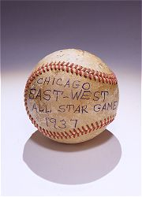

Looking at Artifacts, Thinking about History
Artifacts mean many things

Artifacts are more than just material things. They communicate ideas, symbolize values, and convey emotions. When we consider meaning, value, and significance, we are in the domain of cultural history. Different artifacts mean different things to different people, and those meanings change over time.
Consider a baseball from the Negro League’s 1937 East-West All-Star game. It tells a story of changing value in use, as a memento, as a collectible:
- A Personal Triumph. For first baseman Buck Leonard, this baseball was a souvenir of a winning game, a symbol of his skill and success, and a reminder of how far he had come. Leonard saved this ball for nearly 45 years before finally donating it to the Smithsonian in 1981.
- An Unequal Playing Field. Although the Negro Leagues easily matched the majors in skill and talent, racial and economic barriers kept black and white ballplayers on separate and unequal playing fields. For black teams, baseballs like this one represented the professional equipment they deserved, but did not always get. To save money during the lean Depression years, the Negro League often bought inferior Wilson 150cc balls, which cost fifty cents less per dozen than major-league balls. Only on special occasions, such as All-Star games, could players expect to use official league baseballs like this one.
- The Fans’ Favorite Game. This baseball is from the 1937 East-West All-Star game, when the East beat the West, 7 to 2. For Negro League fans, this baseball represented the most important game of the year. The East-West All-Star Classic, held annually from 1933 to 1950, attracted thousands to Comiskey Park in Chicago to see the best play the best. Fans especially loved the East-West games because they picked the players. By casting their votes in black newspapers, baseball fans sent their favorite stars—including Satchel Paige, Cool Papa Bell, Oscar Charleston, Josh Gibson, Willie Wells, and Buck Leonard—to Comiskey Park.
- “For the Loyalty of the Race.” For the African American community, this baseball was a weapon against the injustices of Jim Crow. At the turn of the twentieth century, the “unwritten rule” that barred black men from playing major league baseball was part of a system of racial segregation that kept white and black Americans in separate and unequal worlds. Founded in 1920 by Andrew “Rube” Foster, the Negro Leagues was one of many African American institutions built behind this color barrier. It became one of the most successful black-owned businesses of its time. Foster hoped his Negro Leagues would promote self-respect and self-help among African Americans and "do something concrete for the loyalty of the race."
- A Collector’s Item. In 1972, this baseball became a collector’s item when its owner, Buck Leonard, was inducted into the Baseball Hall of Fame. Not until 1969 did the major-league establishment begin to recognize the achievements of Leonard, Satchel Paige, Oscar Charleston, and other Negro League stars who, in the words of white Hall of Famer Ted Williams, did not make it into the majors “only because they weren’t given the chance.” Since the 1970s, sports fans and museums have actively collected memorabilia of the Negro Leagues.